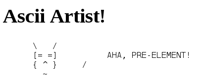

Tehtävä 1.1: Ascii-artisti (1p)
Tehtäväpohjassa olevassa Site Root -kansiossa1 on dokumentti index.html. Muokkaa dokumenttia siten, että sen katsominen selaimessa näyttää seuraavannäköisen ASCII-taideteoksen:

Kuva 1.
Vinkki tarvittaville muutoksille on yllä olevassa kuvassa.
Palauta tehtävästä tiedosto index.html. Varmista ennen palautusta, että tehtäväpohjassa oleva sivu testaa.html ei esitä virheilmoituksia.
Vihjeitä ja lisätietoja
Sivun yläosassa on neljä linkkiä. Tehtävään liittyvän pohjakoodin voi ladata klikkaamalla Tehtäväpohja-linkkiä. Pohja on zip-arkistoiu NetBeans-projekti. Purettuna paketti on kansio, jonka NetBeans tulkitsee “HTML/JavaScript”- projektiksi2.
 Kuva 2.
Kuva 2.
Kun projektin avaa NetBeansiin, näkymä on Kuvan 2 kaltainen. Tehtävä ratkaistaan täydentämällä tiedostoa index.html. Sivun voi “ajaa” klikkaamalla sitä hiiren oikealla näppäimellä ja valitsemalla sitten esiin ilmestyvästä valikosta valinnan Run File3. Ennen ajoa on kuitenkin varmistettava, että käytössä on haluttu selain. Käytettävän selaimen (Firefox) voi asettaa NetBeansin työkalupalkista löytyvän ao. pikanäppäimen kautta.
Run File käynnistää NetBeansiin integroidun web-palvelimen ja valitun selaimen sekä ohjaa selainta lataamaan sivu osoitteesta http://localhost:8383/W1E01/index.html.
NetBeansin -projektissa on mukana myös tiedosto testaa.html, jota ajamalla (Run File)4 voi testata, onko laadittu ratkaisu oikean suuntainen. Testien tulokset tulevat selaimeen. Projektin qunit-kansio sisältöineen liittyy testeihin. Testien ajo edellyttää verkkoyhteyttä.
Jos esim. testäväkuvauksessa on epäselvyyksiä tai kaipaa tuekseen yleisen tason ratkaisuvihjeitä, voi käyttää Moodlessa olevaan tehtäväkohtaista keskustelua, johon ohjaa sivun alussa oleva Keskustelu-linkki. Tämän tehtävän keskustelussa on jo hyviä esimerkkejä keskustelualueen viesteistä.
Tehtävän ratkaisun voi palauttaa sivun yläosan Palautus-linkin kautta. Linkki ohjaa Moodlessa olevaan ao. palautustyökaluun, jonka kautta ratkaisuun liittyvät tiedostot voi palauttaa (tässä: index.html).
Jos tehtävän ratkaisussa tulee vastaan sellaisia ylipääsemättömiä ongelmia, joita ei ole luonteva käsitellä keskustelussa, voi lähettää kurssin vetäjälle katselmointipyynnön palauttamalla ratkaisuun liittyvät tiedostot ja kirjaamalla ongelmakuvauksen vetäjälle lähetettävään sähköpostiviestiin. Sivun yläosan Katselmointipyyntö-linkki osoitaa Moodlessa olevaan “mailto”-linkkiin, jonka tarkoitus on tuoda esiin osin valmiiksi täytetty viestin kirjoitus -ikkuna.5
Tehtävän lähde: Web-selainohjelmointi, Helsingin yliopisto, Tietojenkäsitelytieteen laitos. Creative Commons BY-NC-SA.
-
NetBeansin Files -ikkunassa kansio näkyy nimellä
public_html. ↩ -
NetBeansista tulisi olla paketti, johon sisältyy “HTML5/JavaScript” ja “PHP” (esim. “Java SE”-paketissa näitä ei ole mukana). Tarvittavan paketin voi ladata NetBeansin sivustolta. ↩
-
index.html-sivu tulee esiin myös “ajamalla” projektin, koska index on asetettu projektin käynnistysivuksi. ↩ -
Projektin Test -valinta ei aja tässä testejä. ↩
-
Ei toimi kaikissa ympäristöissä näin varsinkaan, jos Moodleen ei ole ennalta kirjauduttu, mutta sähköpostiviestin voi lähettää myös suoraan ilman ko. linkin apua. ↩